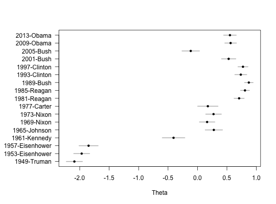
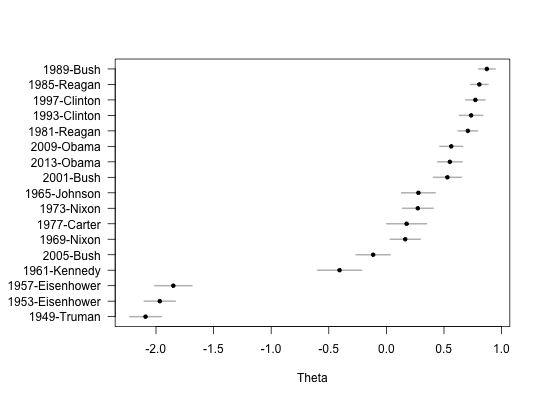
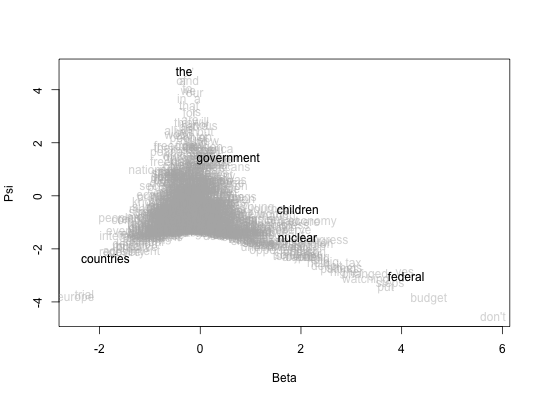

Plot a fitted wordfish model, either as an ideal point-style plot (theta plus confidence interval on the x-axis, document labels on the y) with optional renaming and sorting, or as a plot of estimated feature-level parameters (beta on the x, psi on the y, feature names over-plotted with alpha transparency, optionally some highlighted) as in Slapin and Proksch, 2008.
textplot_scale1d(x, margin = c("documents", "features"), doclabels = NULL, sort = TRUE, mar_left = 8, highlighted = NULL, alpha = 0.5, ...)
"documents" to plot document scores theta (the default)
or "features" to plot psi against beta parametersTRUE (the default), order points from low to high score. If a
vector, order according to these values from low to high. Only applies when
margin = "documents"par (default
8.1). This overrides R's default 4.1, which is typically too cramped for
document names.margin = "features".margin = "features".plotJonathan Slapin and Sven-Oliver Proksch. 2008. "A Scaling Model for Estimating Time-Series Party Positions from Texts." American Journal of Political Science 52(3):705-772.
#>#>textplot_scale1d(mod, sort = TRUE)textplot_scale1d(mod, margin = "features", highlighted = c("government", "countries", "children", "the", "nuclear", "federal"))